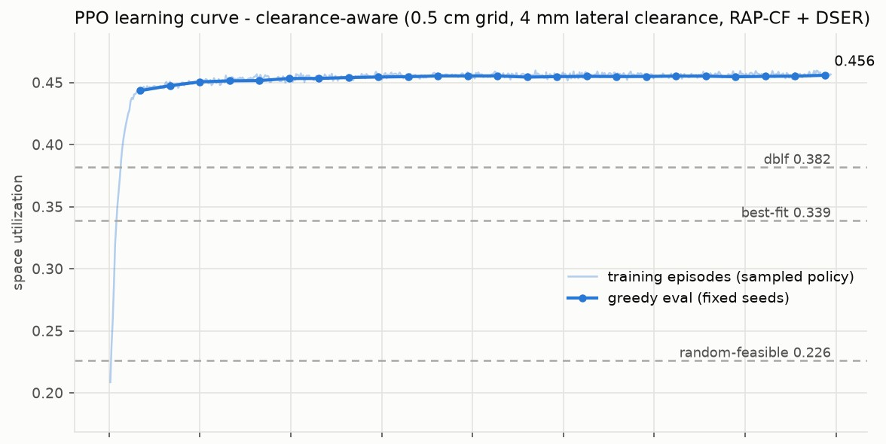

The idea
Train the packing policy with reinforcement learning, but let it choose only among the moves this robot can physically make from the door.
1Background
Packing boxes of different sizes into a container so that little space is wasted is the 3D bin-packing problem. It has no fast exact solution, so warehouses rely on rules of thumb and on the experience of the people loading.
Trucks and containers add a constraint that most learned packing methods ignore: they are loaded through one door. Every box goes in sideways, so a spot that sits behind a box already in place can no longer be reached, however well it would fit. Deep-Pack started as our B.E. capstone, and grew out of PackMax, which only ever showed its loading plan on a screen. Here a machine had to carry the plan out.
2The robot
The arm has five degrees of freedom. A gantry of aluminium extrusions moves it in X and Y over a workspace of 1 m by 0.6 m, with timing belts and linear bearings. A rotary base turns the arm, and a lead screw lifts it through 0.2 m. The end effector is a pair of electromagnets that grip steel washers on one face of each box, and a servo turns them. The payload is 200 g. The container is a scaled model, 30 by 20 by 15 cm, loaded through its open side. Everything runs open loop from an Arduino Mega.
| Static analysis (ANSYS) | Value |
|---|---|
| Maximum stress | 0.87 MPa |
| Maximum deformation | 0.74 mm |
| Safety factor | above 15 |
A path planner turns the policy's plan into pick-and-place moves that the arm runs without feedback, as in the videos on this page. The physical figures in our B.E. report are not backed by logs that survived, so I don't quote them here; the web edition of the report marks them as unverified.
3How the reinforcement learning works
The container is a 60 by 40 by 30 grid of 0.5 cm cells. Two maps describe the load: the height of the stack over the floor, and, for every row of the doorway, how far towards the door the load already reaches. The second is exactly what a depth camera at the door would see.
A generator on the GPU proposes up to 32 corner positions for the current box, each in two orientations, so the policy chooses one of 64 actions. It also sees the size of the next box.
Before the choice, each action is tested: the box must fit and be supported, there must be a free corridor from the door to the spot, the magnets and arm must clear the neighbours, and the arm must be able to reach the pose. Failed actions get zero probability.
Item tokens and candidate tokens attend to each other in 4 blocks, and two small convolutional encoders read the top view and the door view. Each action's score is a product of its item and candidate embeddings. 2.42 M parameters.
Each placement earns its share of the container volume, so an episode's total is the final fill. Small terms reward a dense neighbourhood, good support and a centre of mass well inside it.
2,048 containers run in parallel; each rollout is 16 steps, followed by 4 epochs of updates. 19.9 million steps in 57 minutes on one RTX 4090.
Each box also keeps 4 mm of clearance on every side. That came from the digital twin, an Isaac Lab model of the robot: plans with boxes packed flush jammed at the door 22% of the time, while plans with clearance never did.


4Results
The last of these numbers is the main finding. Without the robot-aware masks a policy packs just as densely on paper, but every one of its plans needs the boxes in a different order from the one they arrive in. Adding the masks only at test time does not rescue it: the fill falls to 20.1%, because it never learned to keep corridors open.
These are simulation numbers, with clearance built in. In the twin, the policy's 10-box plan for the physical queue placed all 640 boxes across 64 randomised runs, each within 3.7 mm of its target.
5What's next
The policy's plans have been tested in the twin, not yet on the physical robot. That is the next step, followed by a camera at the door, which would measure exactly the door view the policy already uses, and let the robot replan as the container fills.